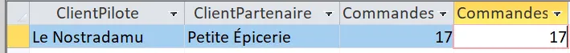

Les requêtes/indicateurs de 2 à 5
2) Dans une réflexion en lien avec l'origine de ses produits : On veut comme indicateur le CA total généré à ce jour avec les fournisseurs de l'UE ?
Le chiffre d'affaires d'une ligne de commande est le prix de vente : quantité × coût d'achat × coefficient de marge × (1 − remise). Les frais de port ne sont pas comptés.
On utilise la requête DetailSansDoublon (faite à la question 3) pour ne pas compter deux fois les 7 lignes en double.
SELECT Sum(D.Quantité * P.CoutAchat * C.CoefMarge * (1 - D.[Remise (%)])) AS CA_UE FROM (((DetailSansDoublon AS D INNER JOIN Produit AS P ON D.[Réf produit] = P.RefProd) INNER JOIN Categorie AS C ON P.CodeCateg = C.CodeCateg) INNER JOIN Fournisseur AS F ON P.NoFour = F.NoFour) INNER JOIN Pays AS Y ON F.NoPays = Y.NoPays WHERE Y.UE = "Membre";
Le pays n'est pas dans la table Produit : on fait une jointure avec Fournisseur, puis avec Pays, pour savoir si le fournisseur est dans l'UE (colonne UE = "Membre"). On fait aussi une jointure avec Categorie pour avoir le coefficient de marge. Le Sum additionne le CA de toutes les lignes gardées.
Pour comparer, on peut refaire la requête sans le WHERE et avec GROUP BY Y.UE :
| Fournisseurs | CA total (€) | Part du CA |
|---|---|---|
| UE (Membre) | 2 752 343,81 | 55,5 % |
| Hors UE | 2 207 475,99 | 44,5 % |
| Total | 4 959 819,79 | 100 % |
Le CA réalisé à ce jour avec les fournisseurs de l'UE est d'environ 2 752 344 €, soit 55,5 % du CA total. Presque la moitié des ventes (44,5 %) vient donc de produits achetés hors UE, souvent très loin. Pour une image plus éco-responsable, KDou peut augmenter la part des fournisseurs de l'UE, et surtout des fournisseurs français.
3) Dans une réflexion en lien avec la santé : On veut comme indicateur le chiffre d'affaire généré (montant total des ventes) annuel pour les catégories desserts ou boissons.
Pour calculer le chiffre d'affaires d'une ligne de commande, on fait : quantité × coût d'achat × coefficient de marge × (1 − remise).
Il y a des lignes en double dans DetailCommande. On les enlève d'abord avec une première requête, enregistrée sous le nom DetailSansDoublon :

On passe de 2 704 lignes à 2 697 : les 7 doublons sont enlevés.
Ensuite on calcule le chiffre d'affaires :

On a fait les jointures entre DetailSansDoublon, Commande, Produit et Categorie, puis on a gardé seulement les desserts et les boissons avec IN. On a additionné avec Sum et regroupé par année et par catégorie avec GROUP BY.

En 2021, les boissons font environ 913 374 € et les desserts 491 935 €, donc presque un tiers du CA total. Les boissons rapportent presque deux fois plus que les desserts. Il faut faire attention : 2021 est la seule année complète, car 2020 commence en juillet et 2022 n'a que 5 commandes.
4) Dans une réflexion en lien avec l'offre commerciale : Calcul de l'indicateur nombre de produits carnés non commandés actuellement ?
Tout d'abord, on essaye d'afficher la colonne NomProd de la table Produit pour voir les noms des produits.
Ensuite, on utilise CodeCateg = 6 pour sélectionner uniquement les produits de la catégorie viande.
Après, on utilise RefProd pour vérifier que les références des produits de la table Produit ne sont pas présentes dans la colonne Réf produit de la table DetailCommande.

Pour finir, on obtient deux résultats : Terrine andouilloux et Pâté de campagne au pommeau.
Cela signifie qu'il y a 2 produits carnés qui ne sont actuellement pas commandés.
5) Dans une réflexion sur le partenariat client : A-t-on des clients pilotes d'un réseau partenaire ayant autant de commandes que les clients partenaires ?

Cette requête permet de comparer le nombre de commandes effectuées par les clients pilotes et leurs clients partenaires. Elle identifie les couples de clients ayant passé exactement le même nombre de commandes. Cet indicateur peut aider KDou à mieux comprendre l'activité commerciale de son réseau de partenaires et à analyser les relations entre les différents clients.

On trouve un seul couple : le pilote Le Nostradamu et son partenaire Petite Épicerie ont tous les deux 17 commandes. Dans les autres réseaux, le pilote et ses partenaires n'ont pas le même nombre de commandes : certains partenaires commandent beaucoup plus que leur pilote, comme ChefFamilla (72 commandes contre 42 pour Chez Bouxou), et d'autres pas du tout, comme La Maison dans le Parc et Délices d'Agen (0 commande).
Le réseau de partenaires est donc déséquilibré. KDou pourrait s'appuyer sur les clients qui commandent le plus pour organiser les livraisons groupées, et relancer les partenaires qui ne commandent jamais.